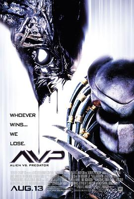

异形大战铁血战士 / AVP: Alien vs. Predator
又名：异兽战(港) / 异形战场(台) / 异形大战捕食者
原来说的是上帝大战异形的故事
作品信息
| 导演 | 保罗·安德森 |
| 编剧 | 丹·欧班农 / 罗纳德·舒塞特 / 吉姆·托马斯 / 约翰·托马斯 / 保罗·安德森 |
| 主演 | 桑娜·莱瑟 / 雷欧·波瓦 / 兰斯·亨利克森 / 艾文·布莱纳 / 科林·萨尔蒙 / 汤米·弗拉纳根 / 约瑟夫·雷耶 / 阿加特·德拉·波拉耶 / 卡尔斯腾·诺尔加拉德 / 山姆·特劳顿 / 彼得·雅克尔 / 基兰·比尤 |
| 类型 | 动作 / 科幻 / 惊悚 |
| 制片国家/地区 | 美国 / 德国 / 捷克 / 英国 |
| 语言 | 英语 / 意大利语 |
| 上映日期 | 2004-08-13(美国) |
| 片长 | 101分钟 / 104分钟(加长版) / 109分钟(未分级版) |
| IMDb | tt0370263 |
说过什么
2021-03-30 18:28:59
广播 · 看过 · ★★★★☆
原来说的是上帝大战异形的故事
最后一次看到是 2026-08-01T11:05:23+10:00 · 豆瓣原页